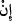
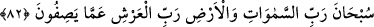

tâzimde bulunup boyun eğenlerin “ilki olurdum.”
Çünkü Peygamberimiz (s.a.) Allah’ın şânını, O’nun hakkında câiz olup olmayan
şeyleri insanların en iyi bileni; Allah’ın hak ve hukûkunu korumaya en lâyık olanıdır.
Çocuğa tâzim ve hürmet, babaya tâzim ve hürmetin gereklerindendir. Yani sizin iddiâ
ettiğiniz gibi, kesin bir delille Allah Teâlâ’nın çocuğu olduğu tesbit edilse, Allah’a
tâzim ve hürmet bâbında o çocuğa en önce ben tâzim ve hürmet eder, boyun eğerdim.
Çünkü Yüce Allah’a itâat, hürmet ve tâzime vesîle olan şey bu hususta da öncelikli
olmaya lâyıktır.
Oysa Allah Teâlâ’nın çocuğunun olmadığı kesin bir gerçektir. Fakat kesin olan bu
durum, sanki böyle bir şeyin olup olmadığı kesin değilmiş gibi mütâlaa edilerek
muhâtabı susturmak ve aleyhine olan delillerle onu ilzâm etmek için böyle müsâmahalı,
karşı tarafa opsiyon verecek bir tarz ile “şâyet” anlamında bir “ /in” edâtı getirilmiştir.
Yoksa bu ifâdeden, Allah Teâlâ’nın çocuğu olup Peygamber’in de ona ibâdet etmesinin
mümkün olması lâzım gelmez. Çünkü bu durum hadd-i zâtında muhâl olup muktezâsı da
muhâldir. Sonuçta ortada ne çocuk ne de ibâdet vardır.
et-Te’vilâtu’n-Necmiyye’ de belirtildiğine göre âyette şuna işâret edilmektedir:
Onları ve sözlerini alaya almak, akılsızlıklarını ortaya koyarak küçümsemek; yani: “Ey
Habibim de ki, ey kâfirler sizin iddiâ ettiğiniz ve Îsâ’ya yaptığınız gibi gerçekten
Allah’ın çocuğu olsaydı, o çocuğa ilk tapan ben olurdum.”
Câfer Sâdık (r.a.) şöyle demiştir: Allah Teâlâ’nın her şeyden önce ilk yarattığı şey,
Hz. Muhammed (s.a.)’in nûrudur. Allah’ın birliğini ilk ikrâr eden, Hz. Muhammed
(s.a.)’in zerresidir. Kalemin yazdığı ilk şey ise “lâ ilâhe illalah Muhammedün
Rasûlullah”tır. Ben Allah’a ibâdet edenlerin ilki olarak O’nu birlemeye ve O’nu
zikretmeye herkesten daha fazla hak sahibiyim.
82. Göklerin ve yerin Rabbi, Arş’ın da Rabbi olan Allah onların
vasıflandırmalarından yücedir, münezzehtir.
“Göklerin ve yerin Rabbi, Arş’ın da Rabbi olan Allah onların,” kendisini evlâd
edinmekle “vasıflandırmalarından yücedir/münezzehtir.”
“Rab” ismini cisimlerin en büyüğü ve en kuvvetlisi olan “semavât”a muzaf kılmakla
şuna tenbih etmektedir: Gökler, yer ve bunların içinde bulunan her şey Cenâb-ı Hakk’ın
melekût ve rubûbiyeti altındadır. Allah’ın melekûtü altında olan bu cisimlerden
herhangi birşey, nasıl Allah’ın bir cüzü ve parçası olabilir ki?
Âyette “Rab” isminin tekrar edilmesinde, arşın şânını yüce tutmak söz konusudur.
Bahru’l-ulûm’da şöyle denilmektedir: Bu büyük cisimlerin Rabbini tesbih ediniz.
Çünkü böyle bir rubûbiyet, orada kendi terbiye ve yönetimi altında bulunanlara tesbih